Jarvi Resort
Проектирование цифрового сервиса для гостей курорта
- Тип
- Роль
- UX-дизайнер
- Год
- 2024–2025
- Что сделано
- Информационная архитектура и wireframes, 12 сценариев
- Figma
- Открыть макеты
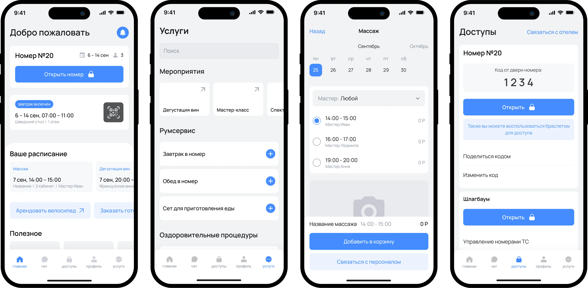
Можно почитать кейс, а можно посмотреть и послушать Loom
Контекст
Jarvi Resort — новый SPA-курорт, открытие которого запланировано на 2027 год.
Без единой системы множество взаимосвязанных сервисов проходят через ресепшен, звонки и разрозненные каналы: сотрудники тратят время на типовые запросы, гости — на поиск информации.
Моя задача
Спроектировать структуру и вайрфреймы мобильного приложения, которое объединяет:
- проживание и бронирование
- цифровые доступы (номер, шлагбаум, транспорт)
- SPA и оздоровительные процедуры
- заказ еды и услуг
- мероприятия и досуг
- онлайн-регистрацию гостей
- коммуникацию с персоналом
- программу лояльности
Организовать большое количество функций в понятную структуру — без перегрузки интерфейса.
Как формировалась структура приложения
Перед проектированием экранов я сгруппировала функции по пользовательским задачам — чтобы собрать разрозненные сервисы в единую систему и избежать перегруженной навигации.
Шаг 1 Группировка по сценариям
Я объединила функции вокруг основных задач гостя:
Управление пребыванием: бронирование, номер, доступы
Сервисы отеля: процедуры, питание, аренда, дополнительные услуги
Досуг: мероприятия и активности
Взаимодействие с отелем: чат и уведомления
Личный кабинет: данные гостя, бронирования, лояльность, онлайн-регистрация
Шаг 2 Финальная структура
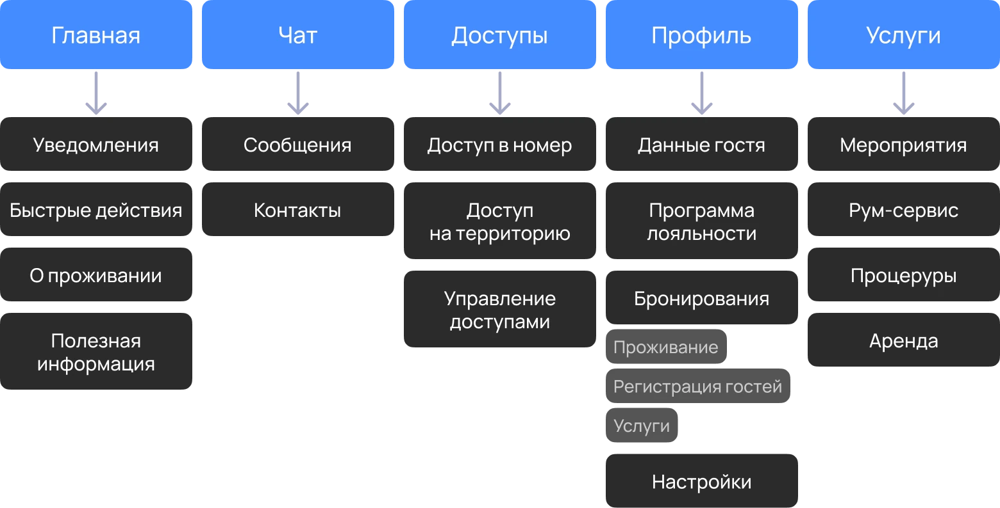
Навигация и ключевые разделы
Главная
Я спроектировала главный экран вокруг частых задач гостя и сценариев, которые требуют быстрого доступа.
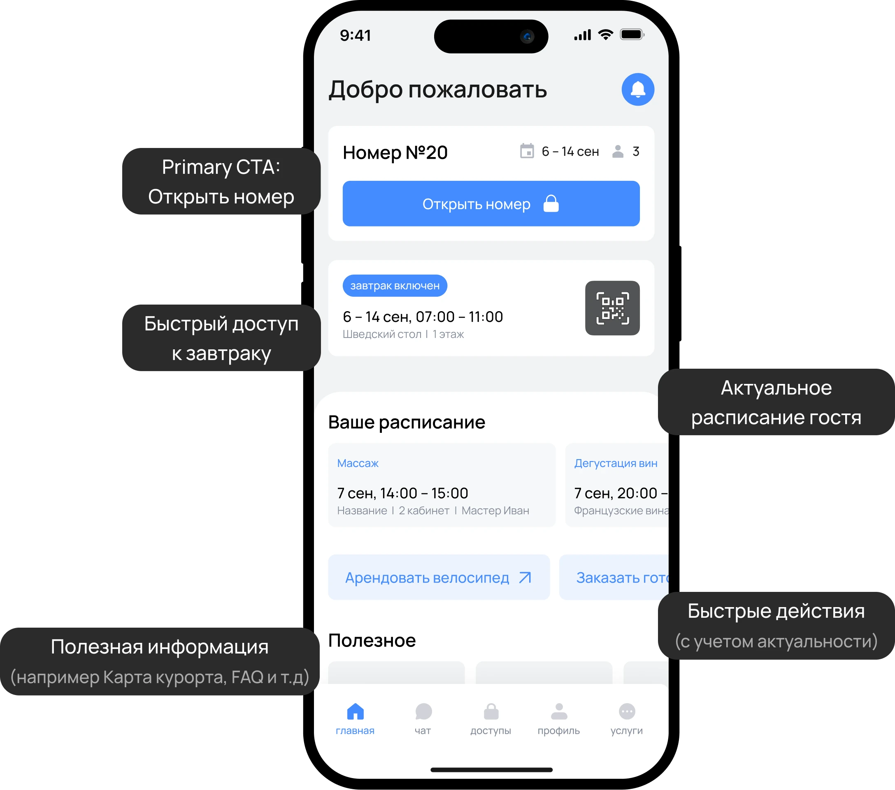
Отдельно проработала сценарий питания. В зависимости от условий бронирования карточка либо предоставляет быстрый доступ к QR-коду для посещения ресторана, либо предлагает оформить питание отдельно.
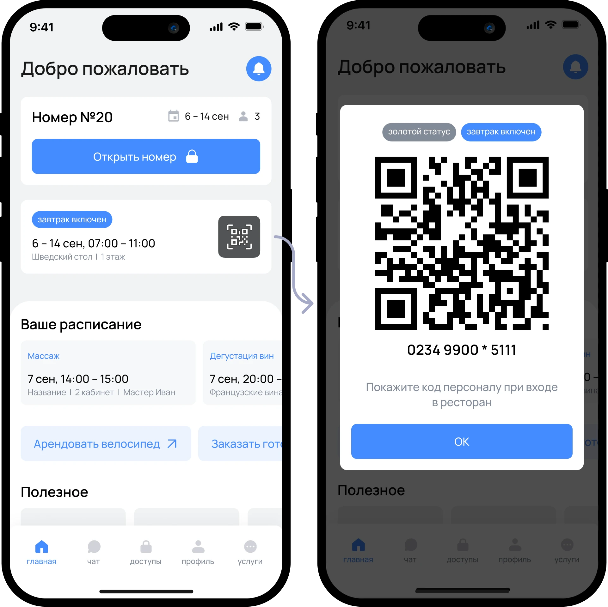
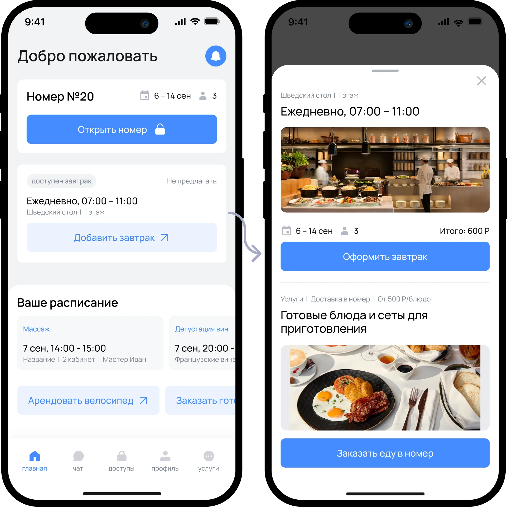
Услуги
Единая точка входа для всех сервисных сценариев:
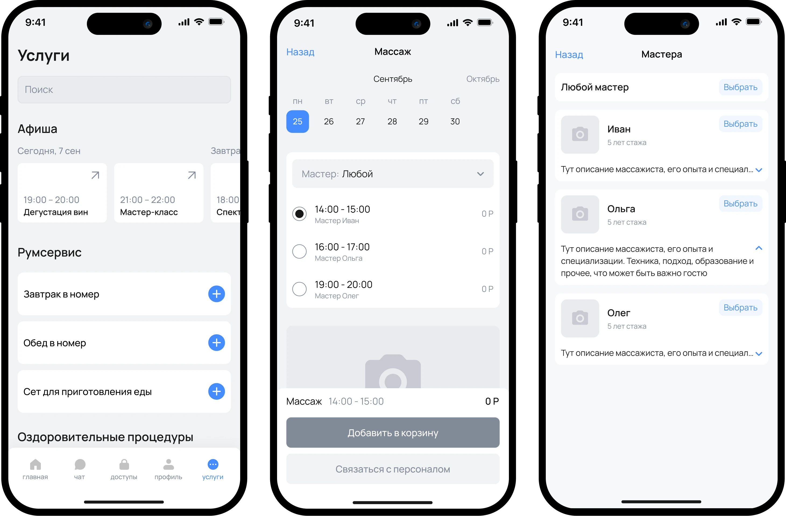
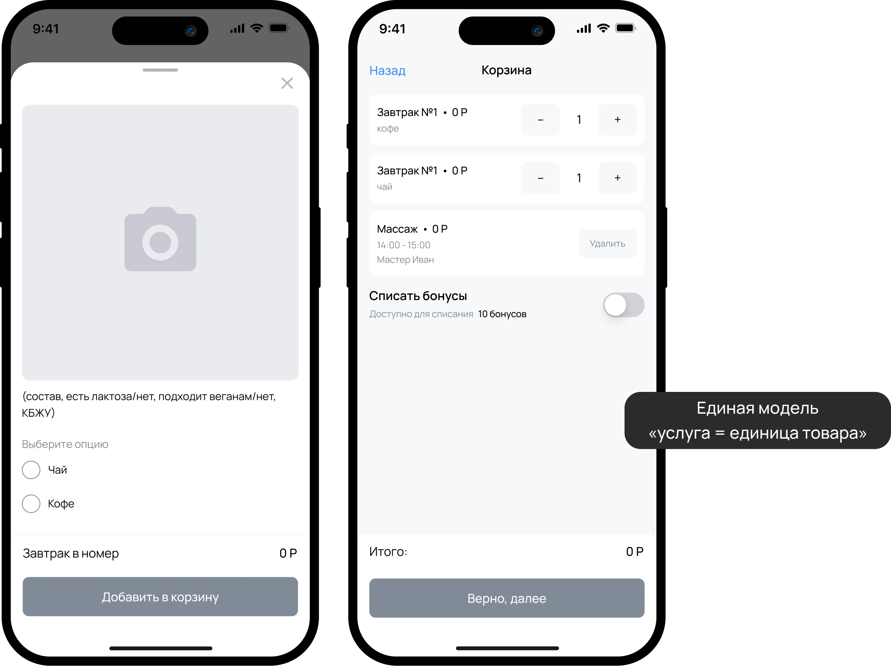
Доступы
В этом разделе я объединила все сценарии управления доступом.
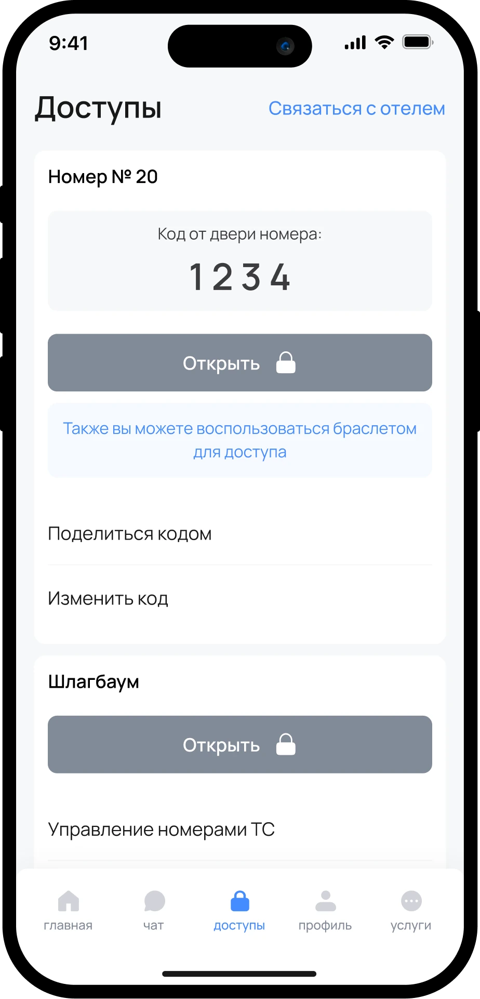
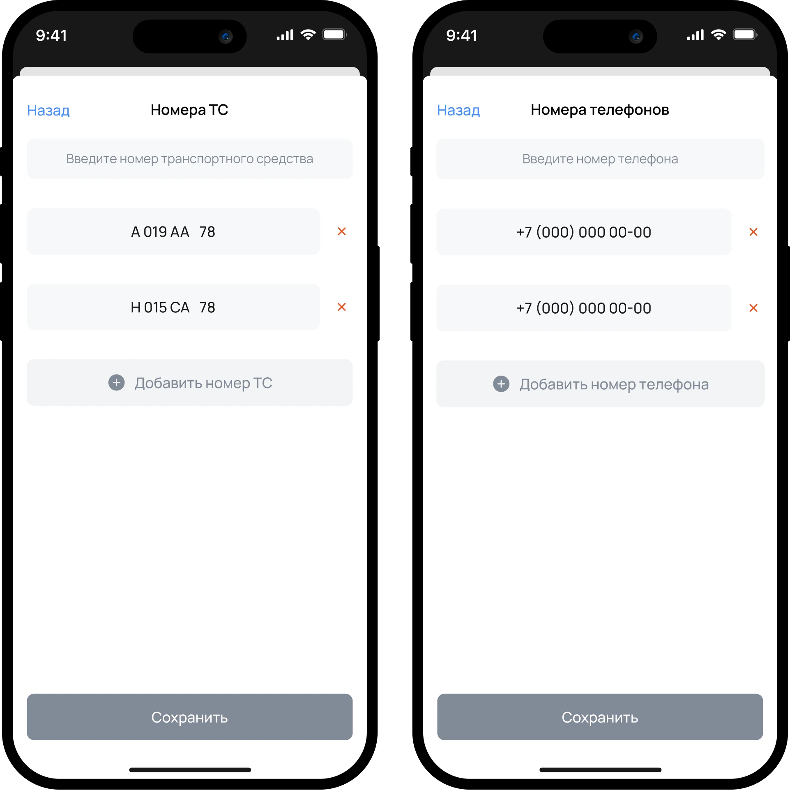
Предварительная регистрация гостей
Заселение семьи или корпоративной группы — юридически обязательный процесс: документы каждого гостя должны быть проверены администратором.
Гость может заранее заполнить данные всех проживающих в номере и добавить транспортные средства в рамках одной брони.
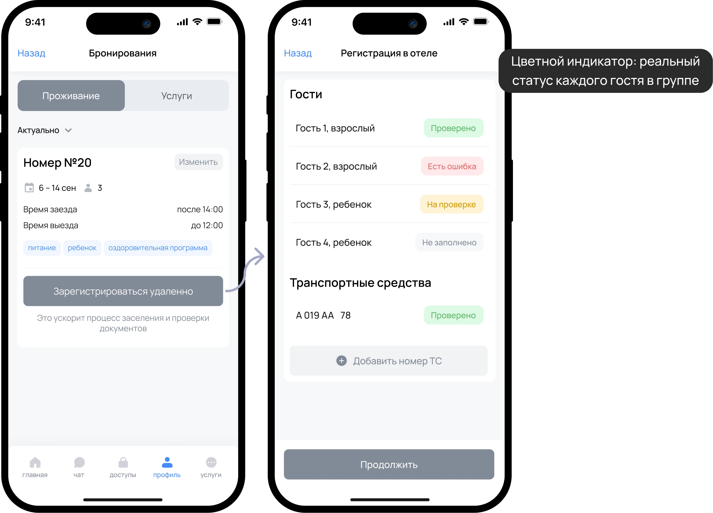
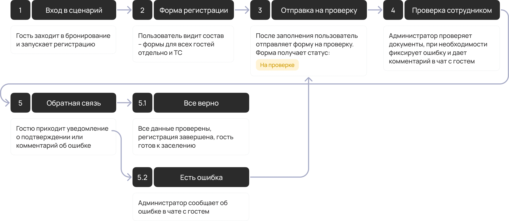
Статус отображается отдельно по каждому участнику. В случае ошибки администратор отправляет пояснительный комментарий в чат с гостем.
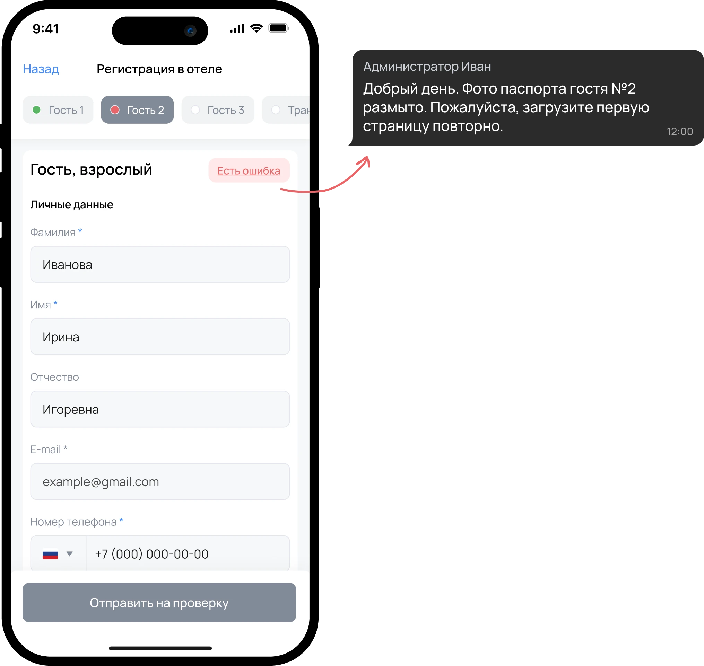
Чат и профиль
Чат — единый канал связи с отелем и точка обратной связи для регистрации и сервисных вопросов. Профиль — личный кабинет: данные гостя, бронирования, лояльность.
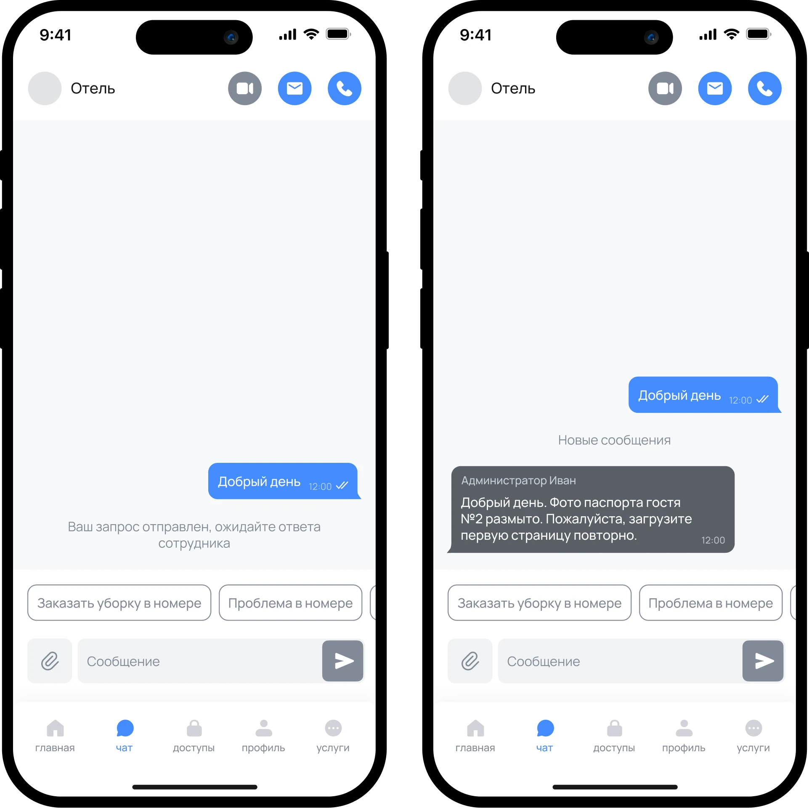
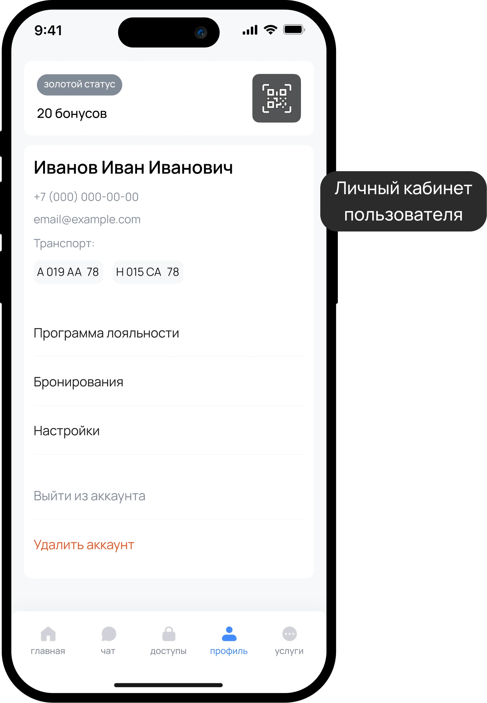
Результат
Я спроектировала информационную архитектуру и детализированные wireframes мобильного приложения — подготовила 12 сценариев в Figma с состояниями, edge-кейсами и флоу, которые стали основой для дальнейшего UI-дизайна и разработки.
Ключевые решения
-
Главный экран — персональный дашборд с приоритетом по частоте использования и актуальности
-
Вынесла доступы и сервисы в отдельные разделы навигации: частые срочные действия отделены от сценариев с выбором и бронированием
-
Сложный сценарий групповой регистрации проработала через пошаговый флоу с визуальными статусами проверки по каждому гостю
Заключение
Главный вывод из проекта: в сложных сервисных продуктах качество UX определяется архитектурой и приоритизацией сценариев, а не отдельными экранами.
Дальше я бы проверила навигацию на гостях разного возраста, уточнила частоту использования ключевых сценариев и протестировала несколько вариантов главного экрана после MVP.
Вернуться в портфолио